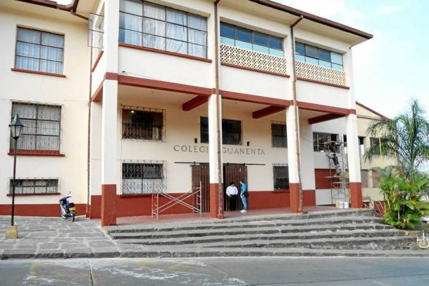

Del grado transicion hasta quinto lo hice en el carlos martinez silva y luego pase al grado sexto y hice un periodo y me retiraron y me fui a estudiar ala esperanza un colegio privado y termine sexto alla y luego me volvieron a ingresar en el colegio guanenta y hice del grado septimo hasta once.